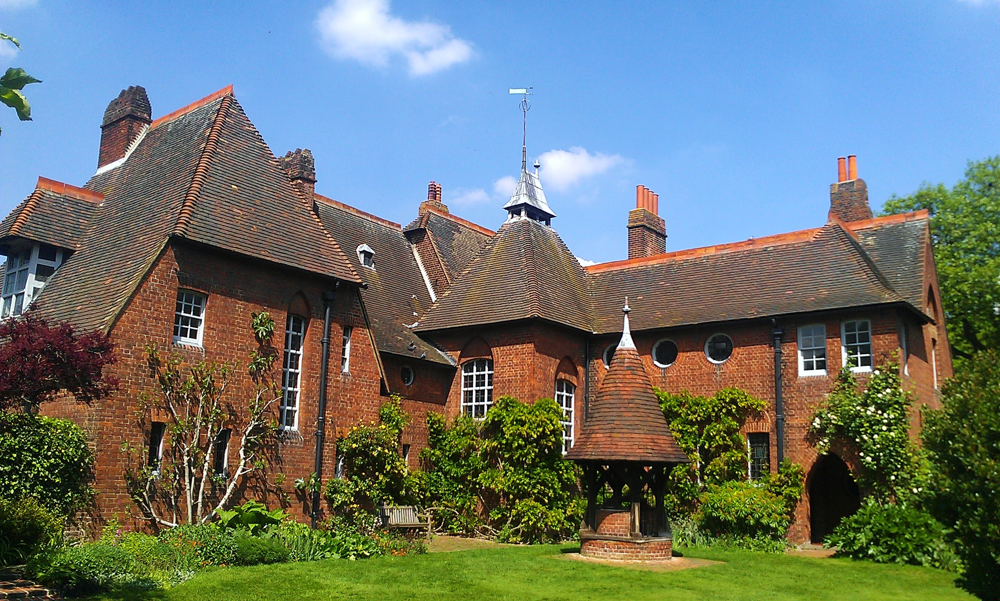

The Arts & Crafts Movement
William Morris, the Guild, the Kelmscott Press, and the argument that how something is made matters as much as what it looks like. The first modern design movement with a moral program.
Historical Context

Design as an argument about how to live. By the 1860s, Victorian design reform had built schools, museums, and institutions, but had not changed the everyday objects in most Victorian homes. Then a twenty-something Oxford graduate named William Morris read Ruskin’s Nature of Gothic and decided to take it literally — to stop criticizing industrial production and start making an alternative.
In 1861, Morris and six partners founded a firm to make furniture, stained glass, wallpaper, and textiles by hand under the designer’s own supervision. Within thirty years they had launched one of the most influential design movements in history — a movement that would feed directly into Art Nouveau, the Wiener Werkstätte, the Werkbund, and the Bauhaus.
This is where design stops being a purely visual problem and becomes an argument about ethics, labor, and how people should live.
Key Ideas
Click each card to reveal an example
Designing and making cannot be separated without damaging both. A well-designed object is one whose maker enjoyed making it. Ugly objects, in this view, are usually evidence of unhappy work somewhere up the supply chain.
Do not stain softwood to imitate hardwood. Do not machine-cut dovetails and pretend they were hand-cut. Do not make iron look like bronze. A signature of the movement is quartersawn oak with visible pegs, through-tenons, and exposed joinery.
Walls, floors, ceilings, furniture, fabrics, cutlery, lighting, and gardens were treated as a single composition. This is why Morris & Co. ended up making so many different products — once you commit to designing a whole environment, you need to control everything in it.
The movement’s favored sources were medieval — English parish churches, illuminated manuscripts, late-medieval houses — not out of nostalgia but as evidence of cultures where craft was respected, materials were honest, and ornament grew out of making rather than being applied to it.
Arts and Crafts ornament is obsessively botanical — willow, honeysuckle, acanthus, daisy, strawberry — but always flattened into repeating patterns that acknowledge the surface they decorate. Where Art Nouveau will later dissolve these forms into movement, Arts and Crafts keeps them woven into the grid of a weave or a print block.
The movement’s most durable contribution: the conviction that design decisions are moral decisions. Every later argument about sustainability, fair labor, ethical sourcing, or “honest” materials is speaking Morris’s language, whether it knows it or not.
The movement organized itself in “guilds” — small, semi-cooperative workshops modeled on medieval crafts. The Century Guild (1882), the Art Workers’ Guild (1884), and C. R. Ashbee’s Guild of Handicraft (1888) were the templates for the Wiener Werkstätte and the early Bauhaus workshops.
By the 1880s Morris had joined the Socialist League, arguing that you could not have joyful labor inside capitalism, no matter how beautifully individual workshops behaved. The political dimension — that design reform required social reform — distinguishes Arts and Crafts from every earlier reform movement.
Historical Timeline
Eight turning points that shaped the movement. Hover cards to expand, click "Read more" for context.
Iconic Works
The Arts and Crafts Movement produced an unusually wide range of iconic objects: houses, textiles, books, furniture, silverware, and whole workshops. The eight works below span its first generation — from Red House in 1860 to the Gamble House nearly fifty years later — and together sketch the reach of the movement across media, nations, and scales.
Key People
The indispensable figure. Poet, designer, manufacturer, translator, printer, socialist, lecturer. Founded Morris & Co., wrote or translated more than forty books, delivered hundreds of political lectures, and designed the wallpapers and textiles that now stand for an entire decorative idiom.
Morris’s closest collaborator and the architect of Red House. A rigorous, austere designer who pioneered the movement’s emphasis on vernacular building, honest materials, and unshowy craftsmanship. His country houses shaped a whole generation of English domestic architecture.
Morris’s closest friend from Oxford. His elongated, dreamy figures are the visual signature of high-Morris stained glass and tapestry. Collaborated with Morris on the Kelmscott Chaucer, designing its 87 illustrations — arguably the most ambitious book of the movement.
Founding partner of the Morris firm and the link between the literary-artistic world of the Pre-Raphaelite Brotherhood and the decorative-arts world of the new firm. Less central to the movement after the 1870s but critical to its early reputation and romantic self-image.
Founded the Guild of Handicraft in London’s East End in 1888 and moved it to the Cotswold village of Chipping Campden in 1902 in an attempt to recreate Ruskin’s vision of a craft community. The Guild made silver, furniture, and metalwork of exceptional quality until it went bankrupt in 1907.
Illustrator, wallpaper designer, teacher, and the movement’s most effective publicist. First president of the Arts and Crafts Exhibition Society, author of several influential books on design theory, and one of the first artists to take children’s book illustration seriously as a design problem.
William Morris’s younger daughter. Took over the firm’s embroidery department at twenty-three and became a major designer and theorist of needlework in her own right. Co-founded the Women’s Guild of Arts in 1907 after being refused membership in the all-male Art Workers’ Guild.
The most commercially successful Arts and Crafts architect. His compact, whitewashed houses with low eaves and horizontal windows were published widely in Europe and deeply influenced early modernism. Also designed wallpapers, fabrics, furniture, and hardware.
Glasgow architect and designer whose spare, geometric, slightly haunting interiors occupy the border between Arts and Crafts and early modernism. Deeply admired by the Vienna Secession. His interiors for Miss Cranston’s tearooms pushed the movement into a distinctly Scottish register.
American furniture maker from Syracuse, New York, whose firm Craftsman Workshops made the most recognizable American Arts and Crafts furniture: rectilinear, quartersawn oak, pinned through-tenons. Popularized the American bungalow as a modest, honest alternative to the Victorian mansion.
Soap salesman turned cultural entrepreneur who founded the Roycroft community at East Aurora, New York, in 1895 after visiting Morris’s Kelmscott Press. The Roycroft made books, furniture, metalwork, and leather goods that carried Arts and Crafts ideas to a mass American audience.
The central figure of the Cotswold school of craft furniture. Moved with Ernest and Sidney Barnsley to Sapperton in Gloucestershire in 1893, where their workshops produced ladder-back chairs, pegged oak dressers, and inlaid cabinets of exceptional refinement. The quiet heart of the movement’s furniture tradition.
Themes & Institutions
Unlike earlier design-reform efforts, Arts and Crafts was a coherent movement: a set of arguments defended by a network of guilds, journals, and exhibitions across Britain, Europe, and the United States. Click each card to flip it.
Originally Morris, Marshall, Faulkner & Co., reorganized in 1875 under Morris’s sole ownership. Made furniture, stained glass, wallpapers, printed textiles, woven carpets, tapestries, tiles, ceramics, embroideries, and books. Still in existence as a wallpaper and textile firm more than 160 years later.
The movement organized itself in "guilds" patterned on medieval craft workshops: the Century Guild (1882), the Art Workers’ Guild (1884), the Guild of Handicraft (1888), the Birmingham Guild (1890), and many others. These were small cooperative businesses — usually financially precarious — that nonetheless produced an astonishing body of work.
The Arts and Crafts Exhibition Society, founded in 1887, held its first show at the New Gallery in London in 1888 with more than 500 items by nearly 150 makers. The phrase "Arts and Crafts" came out of a committee meeting for that exhibition. Further shows followed at roughly triennial intervals, spreading the visual language internationally.
Morris’s private press at Hammersmith, London. Produced 53 books in seven years using hand-made paper, hand-set type in Morris’s own designs, and wood-engraved illustrations. Closed after Morris’s death and inspired a worldwide private-press revival that transformed modern book design.
Morris & Co.’s main production complex, on the banks of the River Wandle south of London. Housed the firm’s dyeing, weaving, tapestry, stained-glass, and carpet operations. Morris ran it as close to a medieval workshop as late-Victorian commercial pressures allowed: natural dyes, hand looms, and fair wages.
Centered on Gustav Stickley’s Craftsman Workshops, his magazine The Craftsman, Elbert Hubbard’s Roycroft community, and the California bungalow architecture of Greene and Greene. By 1910, Arts and Crafts had become in America less a radical critique of industry and more a middle-class aesthetic of simplicity and natural materials.
Founded by Josef Hoffmann and Koloman Moser, explicitly modeled on Ashbee’s Guild of Handicraft. One of the most important direct descendants of the British movement on the Continent, and a key bridge between Arts and Crafts, the Vienna Secession, and early modernism.
The Bauhaus founding manifesto of 1919 — written by Walter Gropius under a Feininger woodcut of a Gothic cathedral — is a direct descendant of Morris. "Let us then create a new guild of craftsmen," Gropius wrote, "without the class-distinctions that raise an arrogant barrier between craftsman and artist." Ruskin, filtered through Morris, speaking in German.
Matching
Click a person on the left, then their iconic work on the right.
Chronology
Click an event on the left, then its year on the right.